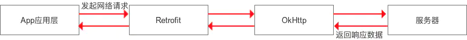
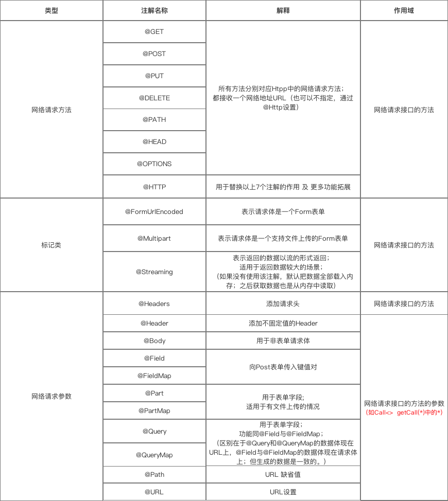

Retrofit
Retrofit是Square公司推出的一个基于RESTful风格的HTTP网络框架
与OkHttp的关系：是对OkHttp网络请求框架的二次封装，本质仍是OkHttp。即网络请求的工作本质上是由OkHttp完成，而Retrofit仅负责网络请求接口的封装。

• App应用程序通过Retrofit请求网络，实际上是使用Retrofit接口层封装请求参数、Header、Url等信息，之后由OkHttp完成后续的请求操作。
• 在服务端返回数据之后，OkHttp将原始的结果交给Retrofit，Retrofit会根据用户的需求对结果进行解析。
• 通过使用大量的设计模式进行功能模块的解耦，使得上面的过程进行得更加简单和流畅。
使用步骤：
①添加Retrofit库、数据解析器库的依赖，注册网络权限在app包下的build.gradle中添加依赖
implementation 'com.squareup.retrofit2:retrofit:2.9.0' implementation 'com.squareup.retrofit2:converter-gson:2.9.0'在AndroidMainfest.xml中注册权限
uses-permission android:name="android.permission.INTERNET"
②创建接收服务器返回数据的类
请求后服务器会返回数据，需要根据返回数据的格式和解析方式（Json、XML等）来定义0实体类Model。
假设有返回数据格式为如下JSON，其中，如果用户名和密码匹配成功，则code值为1，反之为：
{
"code":1,
"data":{
"id":10001,
"username":"Tom",
"email":"888888888@qq.com",
"tel":"18088888888"
},
"message":"success"
}
对应的实体类UserInfoModel：
public class UserInfoModel {
public int code;
public UserInfo data;
public String message;
public static class UserInfo{
public int id;
public String username;
public String email;
public String tel;
}
}
③创建用于描述网络请求的接口
定义一个网络请求的接口，接口函数里要定义URL路径、请求参数、返回类型。其中，需要使用注解来描述请求类型和请求参数。
public interface Interface {
@GET("URL")
Call getCall(@Query("xxx") String xxx);
// 用 @GET("URL")声明了URL路径
// 用 getCall()接收网络请求数据，并用注解 @Query("xxx")声明了请求参数
// 该方法会返回一个 Retrofit 的 Call 对象，这里声明了这个对象处理的数据类型为自定义 Model
}
举个栗子🌰，在上例中，对应的UserMgrService接口如下，当发送请求参数为Tom和123456时，请求将发送给的URL为『login?username=Tom&pwd=123456』，并会返回之前定义的GSON数据：
public interface UserMgrService{
@GET("login")
Call login(@Query("username") String username,
@Query("pwd") String pwd);
}
常用注解含义如下表
注：@GET和@Query搭配使用，@POST和@Field搭配使用
④创建Retrofit对象并设置数据解析器
Retrofit retrofit = new Retrofit.Builder()
.baseUrl("URL") //设置网络请求的Url地址，注意以要以斜线结尾
.addConverterFactory(GsonConverterFactory.create()) //设置数据解析器，这里表示用的是JSON解析返回值
.build();
⑤生成接口对象
由于是interface不是class，无法直接调用内部方法，需要利用已创建的Retrofit对象去生成代理的接口对象
UserMgrService service = retrofit.create(UserMgrService.class);
⑥调用接口方法返回Call对象
调用接口对象的方法，返回一个可以执行网络访问的网络工作对象。
Callcall = service.login("Tom", "123456");
⑦发送网络请求（异步/同步）
同步：调用Call对象execute()，返回结果是响应体。
//开线程进行网络请求
new Thread(new Runable()){
@Override
public void run(){
Response response=null;
try{
response=call.execute();
}catch{
e.printStackTrace();
}
//处理服务器返回的数据
}
}.start();
异步：调用Call对象exqueue()，参数是一个回调。
//异步时，框架中已经封装好数据转换、线程切换的操作，无需手动开线程 call.enqueue(new CallBack(){ @Override public void onResponse(Call call,Response response){ //处理服务器返回的数据 } @Override public void onFailure(Call call,Throwable t){ } });
⑧处理服务器返回的数据
System.out.println("response","code:"+response.body().code);//结果为"code:1"